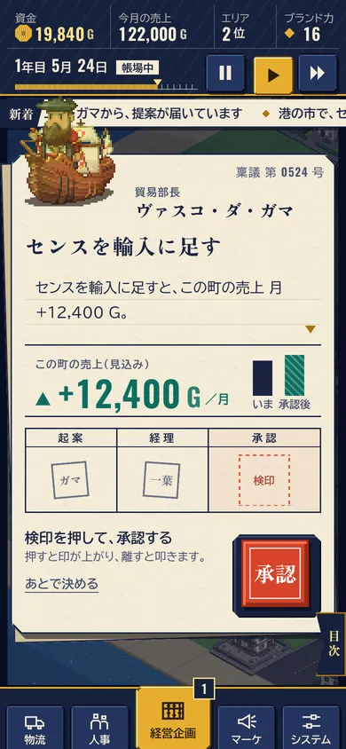
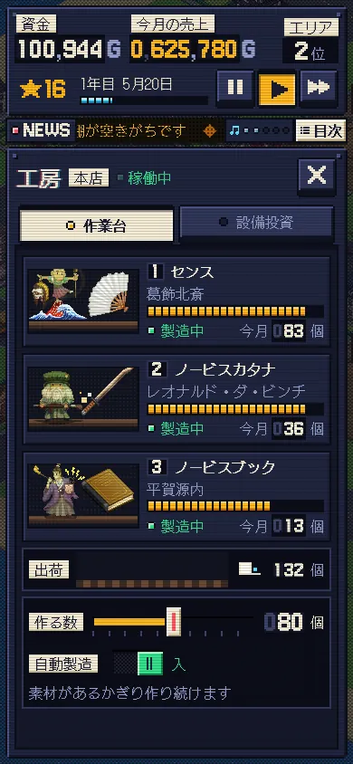

MY CRYPTO SUCCESSOR ・ UIX0
手触りラボ
これからの画面の「見た目・動き・音」を決めるための、触れる見本です。同じ場面を、3 つの方向で作り分けました。ゲーム本体は、まだ何も変えていません。
見かた：スマホで開き、音を出して、最初の画面を押すと始まります。1 つあたり 2 分ほどです。
どの見本にも「目次」があり、好きな場面へ飛べます。工房を押す → 工房を開く → 設備を買う → 提案を承認する → 月次報告 → 制覇、の順に進みます。
-

方向 A
帳場
商家の道具。生成りの紙、墨の紺、金、朱の印。木と紙の音。
- 遷移
- 紙が重なり、綴じ目を軸にめくれる
- 承認
- 朱の検印を持ち上げて、離して叩く
- 数字
- 帳簿の桁が、そろばんのように転がる
-

方向 C
管制卓
ドット絵の町と地続きの、機械の卓。スイッチ、ランプ、計器、紙テープ。チップの音。
- 遷移
- 押した場所から、画素の幕が閉じて開く
- 承認
- 赤いレバーを引き下ろし、ランプが順に点く
- 数字
- 機械のカウンターの桁が回る
- 見くらべる所は 3 つ：場面の切り替わり、承認の手応え、数字の増えかた。それと、曲と効果音が好みに合うか。
- 数字・社名・セリフは見本用の作り物です。ゲームの数字とは関係ありません。
- 各見本の「設定」で、音量・動きを減らす・字の大きさ・色覚に配慮した色を試せます。
- 方向は混ぜられます（例：A の見た目に、C の数字の回りかた）。